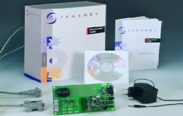

Nouvelle version sous XP des logiciels du Voice Extreme Toolkit de Sensory

Vous avez peut-être eu la désagréable surprise de constater que votre nouveau PC doté de Windows XP n'acceptait pas d'installer le compilateur C « Voice Extreme IDE » ainsi que « Quick Synthesis » de votre kit de développement de reconnaissance vocale de Sensory. Inutile d'essayer le mode compatible de XP, il est impossible de l'installer sous XP. D'ailleurs, il est bien précisé sur le kit : « system requirements: Windows 95/98/ME/NT/2000 ».
Eh bien, après plusieurs mois d'attente, une version de ces logiciels est disponible sous Windows XP, sans supplément de prix, sur le site www.sensoryinc.com.
Rubrique : support - downloads.